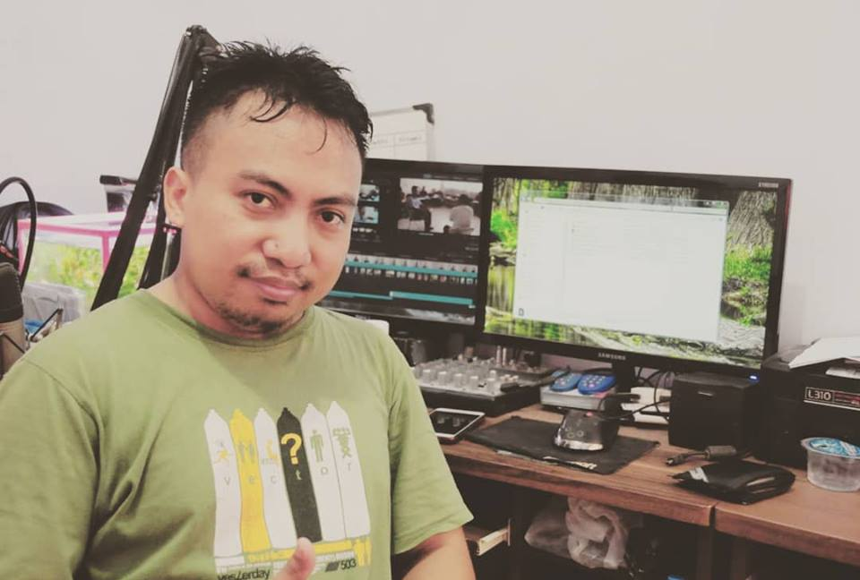

Arizal Firmansyah
PROFIL PENULIS
Nama : Arizal Firmansyah
Email : arizalblogger@gmail.com
WA : 085-1090-69-001
IG : @arizalfir
TENTANG ARIZAL
Arizal Firmansyah adalah seorang pria asli Kepanjen, Malang, Jawa Timur. Arizal merupakan pendiri RIZALmedia dan Yayasan IDM yang terletak di Kepanjen juga.
RIZALmedia merupakan usaha multimedia yang ia dirikan sejak tahun 2008, sedangkan Yayasan IDM (Indonesia Digital Merdeka) yakni yayasan yang fokus di bidang pendidikan komputer dan teknologi berdiri sejak tahun 2022.
Memiliki hobi menggunakan komputer, seperti main game di komputer, memutar lagu atau film dari komputer, membuat pekerjaan yang digeluti oleh Arizal tidak jauh dari hobinya, yakni sama-sama di bidang komputer.
TENTANG PENULIS
Saya suka menulis dan membuat blog karena dengan menulis saya seperti bisa menceritakan sesuatu yang terlintas di fikiran saya. Ini menyenangkan, sebab saya menjadi terlatih untuk berfikir dan bekerja dengan lebih cepat.
ISI TEKS KAKI
Dibuat oleh : Arizal Firmansyah